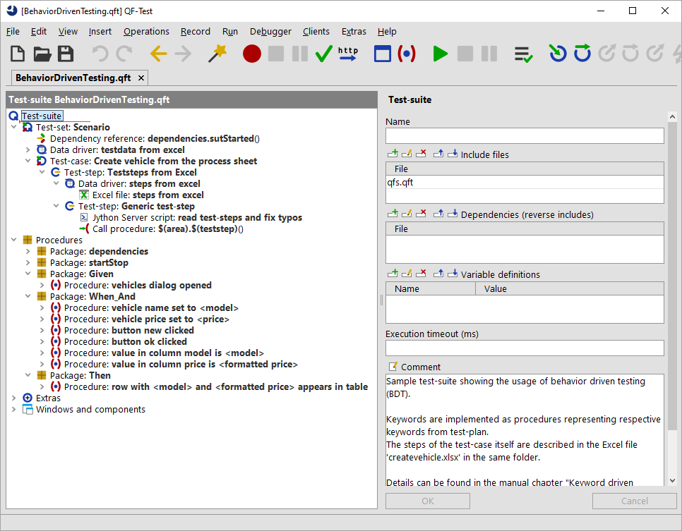

| Version 6.0.3 |
Describing a test-case from a technical perspective using Behavior-Driven Testing (BDT) uses
more or less elementary actions for designing a test-case.
You can find a sample test-suite at qftest-6.0.3/demo/keywords/behaviordriven/
BehaviorDrivenTesting.qft.
The respective test-plan can be found at qftest-6.0.3/demo/keywords/behaviordriven/
createvehicle.xlsx.
Please take care to copy the demo folder to a project-related folder first and modify them there.
The "Create vehicle" test-case looks like this if it's described in the BDT manner from a technical view:
BDT requires to use the terms Given, When, And and Then at the beginning of any sentence.
You will find more information about this approach in the testing literature.
QF-Test requires matching procedures for above test-steps, so we need to build respective procedures again.
It's an established method to divide the BDT-keywords in separate packages.
The provided test-suite therefore contains the packages Given, When_And and Then.
|
|  | ||
|
| Figure 28.6: Test-suite Behavior-driven testing technical | ||
The provided sample test-suite contains all procedures in the respective packages, e.g. a procedure vehicles dialog opened inside the package
Given. In order to prevent annoying typos a Server-script read test-steps and fix typos formats any steps to lower case and tries
to replace multiple blanks by one. This script is called directly before the procedure call of $(teststep).
In order to run the test-case on multiple test-data the sample was extended.
Of course you can apply the concept of generic component recognition as described in the previous section (see section 28.3). To that end you would need to specify a very exact description or implement a script filtering the target components from the test-step itself.
| Last update: 9/6/2022 Copyright © 1999-2022 Quality First Software GmbH |